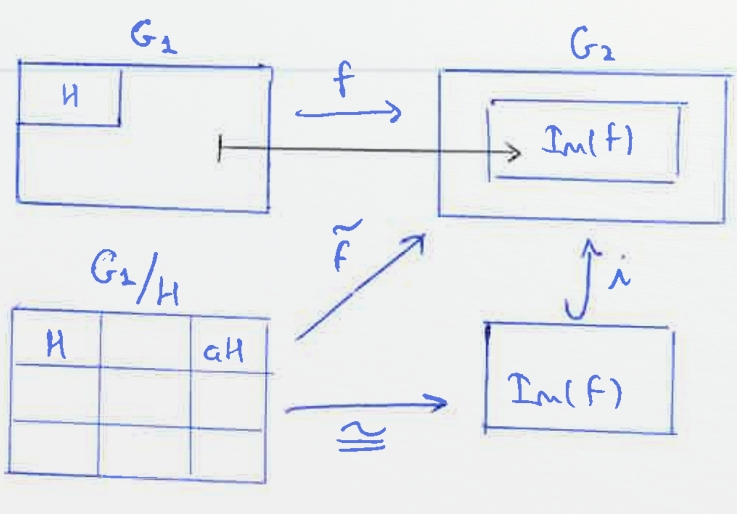

Estructures Algebraiques: Tema 1
1 TODO Grup
2 TODO Interseccio, unio, producte i generacio
3 TODO Ordre d'un element, grup ciclic
4 TODO Morfismes de grups
5 Classes laterals
5.1 Definicio
Sigui G un grup i H in subgrup de G. \(a,b \in G\).
Definim \(a \sim b (esquerra) \iff a^{-1}b \in H\)
5.2 Definicio de la classe d'equivalencia
\(\bar{a}\) := { \(b \in G\) | \(a \sim b\)}
\(aH\) := { \(ax\) | \(x \in H\)}
Observem que aH = \(\bar{a}\)
A més H i aH tenen el mateix cardinal.
5.3 Definicio Classe Lateral:
Anomenem \(G/H = \{aH | a \in G\}\) el conjunt de les classes laterals per l'esquerra (conjunt quocient).
Diem també que l'índex de H en G es \([G:H] = |G/H|\) = nombre d' elements de G modul H
5.3.1 Observacio:
- El nombre de classes laterals per l'esquerra es el mateix que el nombre de classes laterals per la dreta.
- L'índex és multiplicatiu. K ⊂ H ⊂ G. Llavors [G:K] = [G:H] * [H:K]
5.4 Teorema de Lagrange
Sigui G un grup i H un subgrup, G finit.
Aleshores \(|G| = |G/H| * |H| \iff |G/H| = \frac{|G|}{|H|}\), i a més |H| divideix |G|.
5.4.1 TODO Demo
6 Subgrup normal, Grup quocient
6.1 Definicio: Subgrup Normal
Sigui G un grup, H un subgrup de G. H és subgrup normal de G si aH = Ha ∀ a ∈ G.
6.2 Lema
f: \(G_1 \to G_2\) morfime de grups. Aleshores,
- Si \(H_1 \vartriangleleft G1 \implies f(H_1) \vartriangleleft f(G_1)\).
- Si \(H_2 \vartriangleleft G2 \implies f^{-1}(H_2) \vartriangleleft G_1\).
6.2.1 TODO Demo
6.3 Observacio
\(H \subseteq K \subseteq G\), H,K subgrups de G. Aleshores.
Si \(H \vartriangleleft G \implies H \vartriangleleft K\). El reciproc es fals.
6.4 Observacio
si \(H \vartriangleleft G\), aleshores (aH)*(bH) = (ab)H
6.5 Definicio: Operacio interna
Sigui \(H \vartriangleleft G\) i sigui G/H = {aH | a ∈ G} el conjunt de classes laterals per l'esquerra modul H. En G/H definim l'operacio interna:
\begin{alignat*}{5} G/H &\times G/H &\to&\hspace{2pt} G/H & \\ aH &\times bH &\mapsto& (ab)H & \end{alignat*}6.6 Corol.lari
\(G/H\) es un grup i s'anomena el grup quocient de G per H.
6.7 Exercici: La aplicacio quocient es un morfisme
7 Primer teorema d'isomorfisme
7.1 TODO Teorema:
Sigui \(f: G_1 \to G_2\) morfisme de grups, Sigui \(H \vartriangleleft G_1\), i sigui l'aplicació
\begin{alignat*}{2} \tilde{f}: G_1/H &\to G_2 \\ aH &\mapsto \tilde{f}(aH) := f(a) \end{alignat*}
8 El grup multiplicatiu d'un cos finit
8.1 Definicio
Sigui \(\mathbb{K}\) un cos. El grup multiplicatiu de \(\mathbb{K}\) és
8.2 Teorema
Sigui \(\mathbb{K}\) un cos. Sigui G un subgrup finit de \(\mathbb{K}^*\). Aleshores G és cíclic
8.2.1 TODO demo
9 Grup simples
9.1 Definicio
Sigui G un grup no trivial. Direm que G es simple si els unics subgrups normals de G son {1} i G.
9.2 Proposicio
Sigui G un grup no trivial. Son equivalents
- G es simple i abelia
- |G| = p, on p es primer
- \(G \cong \mathbb{Z}/p\mathbb{Z}\)
9.2.1 TODO Demo
9.3 Teorema de Feit-Thompspn
Sigui G grup simple, Suposem |G| es senar. Aleshores G es ciclic i \(G \cong \mathbb{Z}/p\mathbb{Z}\).
9.4 Teorema
Sigui n \(\geq\) 5, Aleshores \(\mathcal{A}_n\) es simple
9.4.1 TODO Demo
9.5 Proposicio
Sigui G un grup, \(H \vartriangleleft G\). Aleshores,
G/H es grup simple \(\iff\) H es un element maximal en el conjunt {K | \(K \vartriangleleft G\), \(K \neq G\)}
9.5.1 TODO Demo
10 Grup resolubles
10.1 Definicio torre normal
Una torre normal de G es \(G = G_0 \vartriangleright G_1 \vartriangleright G_2 \vartriangleright \ldots \vartriangleright G_n = \{1\}\) on G es un grup i \(G_i \vartriangleleft G_{i+1}\).
Anomenem n la longitud de la torre
\(G_{i-1}/G_i\) s'anomenen els quocients de la torre
A mes definim:
- Torre normal abeliana: Torre normal amb quocients abelians.
- Torre normal simple/serie de composicio: Torre normal amb quocients abelians
10.2 Definicio Grup Resoluble
Direm que G es resoluble si te una torre normal abeliana.
10.3 Teorema: Segon Teorema d'isomorfisme
Sigui G grup i H,K dos subgrups de G. Suposem \(H \vartriangleleft G\). Aleshores:
- \(H \cap K \vartriangleleft K\)
- \(H \cdot K\) es subgrup de G
- \(H \vartriangleleft H \cdot K\)
- A mes a mes, \(\sfrac{K}{H \cap K} \cong \sfrac{H \cdot K}{H}\)
10.3.1 TODO Demo
10.4 Teorema: Jordan-Holder
Aleshores n = m, i \(\exists \sigma \in \mathcal{S}_n\) tal que \(\sfrac{H_i}{H_{i+1}} \cong \sfrac{G_{\sigma(i)}}{G_{\sigma(i)+1}}\).
10.4.1 TODO Demo
10.5 Proposicio
Sigui G un grup, H un subgrup de G. Aleshores
- Si G es resoluble \(\implies\) H es resoluble
- Si \(H \vartriangleleft G\) i G es resoluble \(\implies \sfrac{G}{H}\) es resoluble
- Si \(H \vartriangleleft G\) i H i \(\sfrac{G}{H}\) son resolubles \(\implies\) G es resoluble
11 Accio d'un grup en un conjunt
11.1 Definicio: Accio d'un grup en un conjunt
Sigui G un grup. SIgui X un conjunt. Una accio de G en X es una aplicacio
\begin{alignat*}{2} \varphi : G \times X &\to X \\ (a, x) &\mapsto \varphi(a,x) = ax \end{alignat*}tal que:
- \(a \cdot (b \cdot x) = (a \cdot b) \cdot x \hspace{10pt} \forall a,b \in G, \forall x \in X\)
- \(1 \cdot x = x \hspace{10pt} \forall x \in X\)
11.2 Observacio
Hi ha una bijeccio entre
{\(\varphi: G \times X \to X \mid \varphi \text{ accio de G en X}\)} \(\leftrightarrow\) {\(\phi: G \to Perm(X) \mid \phi \text{ morfisme de grups}\)}
11.3 Definicio: Orbita d'un element
L'orbita de \(x \in X\) es el subconjunt \(G \cdot x = \{ax \mid a \in G \} \subseteq X\)
11.4 Definicio: L'estabilitzador/grup d'isotropia d'x ∈ X
Gx := {\(a \in G \mid ax = x \} \subseteq G\), es un subgrup de G.
11.5 Lema:
Si x,y estan en la mateixa orbita, els seus estabilitzadors son conjugats.
Concretament, si y = ax \(\implies G_y = aG_{x}a^{-1}\)
11.5.1 TODO DEMO
11.6 Proposicio
L'aplicacio
\begin{alignat*}{3} G \cdot x &\to \sfrac{G}{G_x}& \\ ax &\mapsto a\cdot G_x& \end{alignat*}
esta ben definida i es bijectiva. En particular,
- \(\vert G \cdot x \vert = \vert \sfrac{G}{G_x}\vert = [G:G_x]\)
- Si G es finit, \(\vert G \cdot x \vert \text{ divideix } \vert G \vert\)
- Si X es finit, \(\vert X \vert = \sum_{i=1}^{n} \vert G \cdot x_i \vert = \sum_{i=1}^n [G:G_{x_i}]\)
11.6.1 TODO DEMO
11.7 Definicio: punt fix
\(x \in X\) es un punt fix per l'accio si ax = x \(\forall a \in G\). En particular
\(G \cdot x = \{ax \mid a \in G\} = \{x\}\), \(G_x = \{ a \in G \mid ax = x \} = G\)
11.8 Definicio: Accio Transitiva
\(G \times X \to X\) es accio transitiva si ∀ x,y ∈ X, ∃ a ∈ G \text{ tal que } y = ax.
En aquest cas. G ⋅ y = X ∀ \quad y ∈ X.
11.9 Definicio: Accio Fidel
\(G \times X \to X\) es accio fidel si ∀ a ≠ b, a,b ∈ G. Aleshores ma ≠ mb, on
\begin{alignat*}{3} m_a: &X &\to X \\ &x &\mapsto ax \end{alignat*}ma ∈ Perm(x)
11.9.1 Observacio:
Si be \(G \times X \to X \cong m: G \to Perm(x)\) es morfisme de grups, si imposem que es fidel, el morfisme es injectiu. A mes si X es finit l'accio es isomorf a un subgrup del grup simetric.
11.10 Accio per translacio en X, quan X = G
Sigui G un grup, definim
\begin{alignat*}{4} &G \times &G &\to G \\ &a &x &\mapsto a \cdot x = ax \end{alignat*}I es efectivament una accio.
11.11 Teorema de Cayley
Sigui G un grup finit, n = |G|. Aleshores G es isomorf a un subgrup del grup simetric \(\mathcal{S}_n\)
11.11.1 TODO Demo
11.12 Definicio: Accio per conjugacio de G en X = G
11.12.1 Proposicio:
\(x \in G \text{ es punt fix } \iff a \cdot x = x \quad \forall a \in G \iff axa^{-1} = x \forall a \in G \iff ax = xa \quad \forall a \in G \iff x \in \mathcal{Z}(G) = \{ x \in G \mid ax = xa \quad \forall a \in G \} = \text{ centre de G}\). El centre de G es subgrup.
11.12.2 Proposicio:
L'estabilitzador de y ∈ G es \(G_y = \{a \in G \mid a \cdot y = y \} = \{ a \in G \mid aya^{-1} = y \} = \{ a \in G \mid ay = ya \} = \mathcal{Z}_{G}(y)\), centralitzador de G. El centralitzador tambe es un subgrup de G.
11.13 Definicio: Accio per translacio en les classes laterals
Sigui G grup, H subgrup de G i X = \(\sfrac{G}{H}\) = { aH \mid a ∈ G}
\begin{alignat*}{4} &G \times &\sfrac{G}{H} &\to \sfrac{G}{H} \\ &a &bH &\mapsto abH \end{alignat*}- Es una accio transitiva.
- si \(aH \in X = \sfrac{G}{H} \text{: L'estabilitzador de aH es } G_{aH} = \{ b \in G \mid b(aH) = aH \} = aHa^{-1} \)
11.14 Definicio: Accio per conjugacio en els subgrups
Sigui G grup i \( X = \{ H \mid \text{ H subgrup de G} \}. \)
\begin{alignat*}{4} &G \times &\text{\{sg. de yG\}} &\to \text{\{sg. de G\}, conjugat de H} \\ &a &H &\mapsto aHa^{-1} \end{alignat*}
Si H es subgrup de G, l'orbita d'H es:
\(G\cdot H =\{a \cdot H\mid a\in G \} = \{aHa^{-1} \mid a \in G \} \text{: els conjugats de H} \)
H es punt fix per l'accio si \(a\dotH = H \iff aHa^{-1} = H \quad \forall a \in G \iff \text{H es subgrup normal de G} \)
L'estabilitzador de H es: \( G_H = \{a \in G \mid a \cdot H\} = \{ a \in \G \mid aHa^{-1} = H \} = N_{G}(H)\): Normalitzador de H en G
Sabem que \( \vert G \cdot H\vert = [G : G_H ]. \) Per tant.
\( H \vartriangleleft G \iff \text{H es punt fix per l'accio} \iff \text{L'orbita de H te un sol punt } \iff \vert G \cdot H \vert = 1 \iff [ G : G_H] = 1 \iff G_H = G \iff N_{G}(H) = G \)
11.15 Teorema de Cauchy
Sigui G un grup finit, |G| = n. Sigui p primer tal que p|n.
ALeshores, ∃ x ∈ G tal que ord(x) = p
11.15.1 TODO Demo
12 Subgrups de Sylow
12.1 Definicio: p-grups: Subgrups de Sylow
Sigui G un grup i p un nombre primer. Aleshores, G es un p-grup \iff | G | = pr per a algun r ≥ 0.
12.2 Teorema:
Sigui G un p-grup. Aleshores, |G| = pr, r ≥ 0, i:
- G no trivial \( \iff \mathcal{Z}(G) \) no trivial.
- G es resoluble
- si G es simple, aleshores G \( \cong \sfrac{\mathbb{Z}}{p\mathbb{Z}} \)